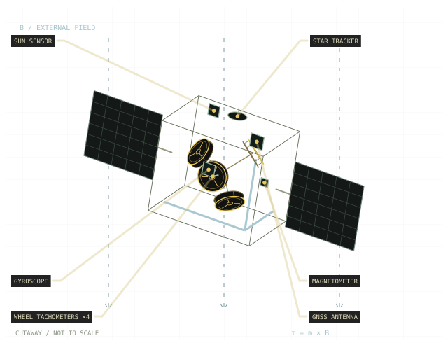

Research engineering project · space robotics
Learning to control
satellite's attitude.
Tetrahedral configured reaction wheels. Set of delayed sensors. Loss of signal/control. Motor limits. Giving all this an agent learns to control satellite's attitude to accomplish several different scenarios.
This project is aimed to build a satellite attitude determination and control system (ADCS), connecting reinforcement learning with state estimation, fault handling, mission guidance, state supervison.
Explore the project
- Actuation
- 4 reaction wheels
- Control rate
- 20 Hz
- Availability
- FDIR plus supervisor layer
- Simulation rate
- 100 Hz
- Application
- 5 practical scenarios
- Wheels saturation
- MTQ magnetic torque thruster
- Sensors
- 5 sensors with simulated degradation
- RL agent
- 20k parameters, fully connected NN
- Orbit
- LEO 500km above ocean level
The principal question
Can a policy control
what it cannot directly observe?
The policy receives estimated attitude and wheel health. Sensor timing, state estimation, and fault detection sit between the simulated spacecraft and the controller. What the simulator knows is different from what the controller gets to know.
In the ground-station scenario, the policy commands wheel motors while guidance provides a moving target and supervisory logic retains authority over operating modes.
Follow the control loopA closer look
GNC & controlSensors, estimation, classical and learned control↗Fault managementDetection, redundancy, and recovery decisions↗Learning to controlFrom PD imitation to direct wheel commands↗Where it stands
A working simulation with estimation, fault-aware control, and ground-pass tracking. The next step is independent validation. Hardware transfer and an advantage over conventional control are still to be established.
Evidence & next experiments